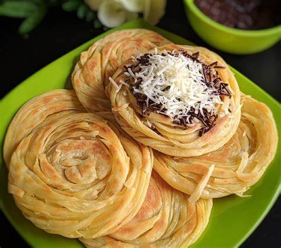
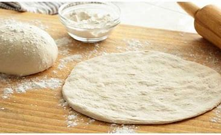
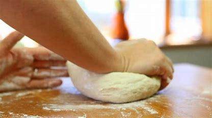

RESEP KUE MARYAM
Bahan-bahan:

- 250 gr tepung terigu
- 1 butir telur
- 3 sdm margarin,lelehkan
- 100 ml air hangat
- 2 sdm susu bubuk(optional)
- 1/2 sdt garam
- margarin leleh untuk olesan
- minyak untuk merendam
Langkah-langkah :
- Campur semua bahan roti jadi satu

- Uleni sampai kalis(aku pake tangan)jangan takut jika adonan lengket ya,lumuri tangan
sesekali dg tepung(tapi jangan menambah tepung)uleni terus sampai adonan kalis

- Kalisnya adonan canai tidak sekilas adonan roti ya, seperti ini sudah cukup